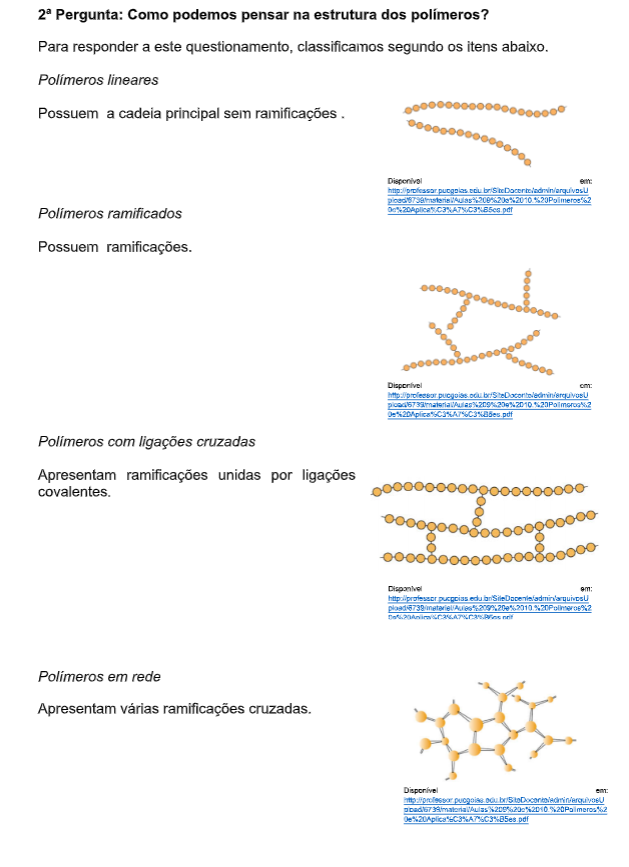
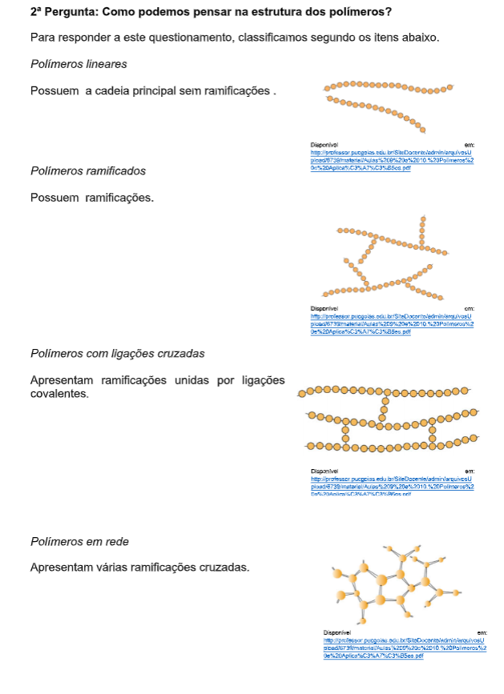
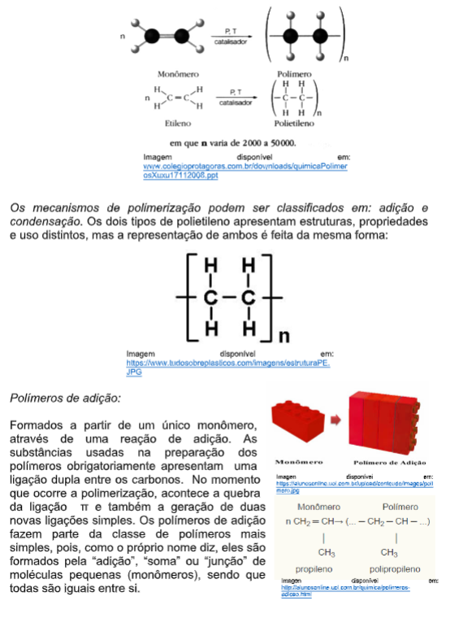
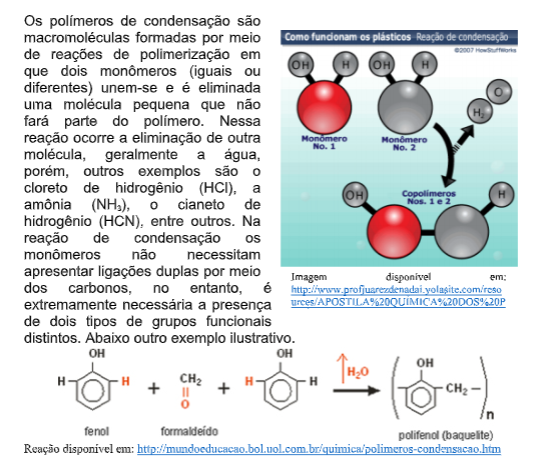

Capítulo 3
Polímeros na indústria moveleira
Como relacionar a área de estudo da Química que estuda sobre polímeros com a indústria moveleira? Quais conceitos são relevantes? Como se relacionam com o cotidiano?
CONTEXTUALIZANDOAs soluções tecnológicas na produção de materiais apresentam impacto na indústria moveleira, impulsionando a reformulação de projetos, das pesquisas de novos materiais e suas características. Devido à diversidade de materiais disponíveis como matéria prima para a indústria moveleira e de acordo com as características que cada um pode apresentar conforme a aplicação desejada é comum encontrarmos materiais poliméricos aplicados em diversos setores da indústria, a exemplo do uso em mobiliário. Com o desenvolvimento da indústria dos polímeros, muitos produtos que antigamente eram produzidos com materiais como o vidro, cerâmica, aço, hoje são substituídos por diversos tipos de plásticos que, devido à sua versatilidade, menor peso, maior facilidade de manuseamento, menor custo de produção, entre outros aspectos, cumpre de forma mais eficaz os requisitos pretendidos para os produtos.
(Re)construindo conceitosA cadeia produtiva da indústria moveleira representa um conjunto amplo de atividades que vão desde a obtenção da matéria-prima nas florestas, até a venda de móveis e madeira processada para outras atividades produtivas, articulando o fornecimento de insumos, bem como o processamento, a distribuição e a comercialização desses bens. A cadeia produtiva organiza-se em três blocos distintos do processo produtivo sequenciado: a cadeia principal, constituída pelos elos centrais do segmento produtivo; a cadeia a montante, composta por elos que se constituem em insumos fundamentais para o funcionamento da cadeia principal; e a cadeia a jusante, que contempla elos e atividades que utilizam, processam e beneficiam os produtos da indústria moveleira. Assim é possível identificar a gama de materiais que estão envolvidos na cadeia e destes vamos conhecer um pouco mais a respeito dos materiais poliméricos. Basearemos nossos estudos com questionamentos.
1ª pergunta: O que são polímeros? 
3ª Pergunta: Como podemos classificar os polímeros, segunda a sua
natureza?

3ª Pergunta: Como podemos classificar os polímeros, segunda a sua
natureza?
A classificação quanto a natureza, se divide em: Polímeros naturais e sintéticos, que aprofundaremos na sequência.
Polímeros Naturais
Desde as civilizações primitivas há utilização de polímeros naturais (couro, lã, madeira, algodão), estes estão presentes na natureza e são denominados de polímeros naturais, tais como o látex da borracha, a celulose e as proteínas. Ao tentar reproduzir os polímeros naturais, pesquisadores conseguiram desenvolver polímeros artificiais, que são chamados no cotidiano de plásticos.
Polímeros Sintéticos
Os polímeros sintéticos são produzidos quimicamente, de produtos derivados de petróleo. Eles podem oferecer uma infinidade de aplicações e são produzidos para atender cada aplicação requerida. O tamanho e composição química podem ser manipulados por meio de reações e assim é possível produzir um material com propriedades para determinadas funções. Frequentemente, polímeros sintéticos são preparados por reações de adição e condensação.
4ª Pergunta: Onde se pode aplicar as estruturas de polímeros naturais e sintéticos?Para responder a este questionamento, seguem dois quadros,

2.Quadro sobre polímeros sintéticos que apresenta duas classificações e aplicações.
 5ª Pergunta: Como reagem quimicamente os polímeros e quais os tipos?
5ª Pergunta: Como reagem quimicamente os polímeros e quais os tipos?
Para entendermos como funcionam as reações de polimerizações precisamos identificar: a estrutura química, o método de preparação, as características tecnológicas e o comportamento mecânico, porém aqui neste curso vamos focar apenas e apresentar os tipos de reações.
Reações de polimerização:
Na reação de polimerização os monômeros reagem entre si formando uma longa sequência de unidades repetitivas (meros). Durante a polimerização, ocorre a ruptura da ligação dupla (π) e a formação de duas novas ligações simples, como mostra o esquema:
Polímeros de condensação:
 6ª Pergunta: Como se classifica os polímeros quanto a variação de temperatura?Os polímeros naturais ou artificiais são classificados em dois grandes grupos, chamados de termoplásticos e termoestáveis ou termofixos devido a seu comportamento ante as variações de temperatura. Os materiais termoplásticos são substâncias caracterizadas por sua propriedade de mudar de forma sob a ação do calor, o que permite seu tratamento e moldagem por meios mecânicos. Com o resfriamento, esses materiais recuperam sua consistência inicial com pouca ou nenhuma variação em suas propriedades básicas. Entre eles estão os derivados da celulose, os polímeros de adição e os polímeros de condensação. O polietileno, as resinas acrílicas, o vinil, o poliestireno e os polímeros de formaldeído constituem as principais variedades de polímeros de adição com propriedades termoplásticas. O cloreto de polivinila tem um grande número de aplicações, da fabricação de roupas e brinquedos a isolantes elétricos e móveis.
Os materiais termofixos ou termoestáveis se amoldam por aquecimento, mas depois de certo tempo adquirem uma estrutura peculiar (ligações cruzadas) na qual endurecem rapidamente e se convertem em materiais rígidos que, se aquecidos em excesso, se carbonizam antes de recuperar a maleabilidade (degradação de sua estrutura química). As poliuretanas, reduzidas a lâminas, são usadas como isolantes térmicos e espumas de recheio em almofadas.